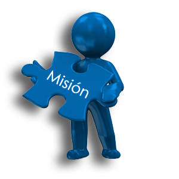

Misión
tiene como misión transformar la agricultura a través de la tecnología, optimizando los procesos productivos, promoviendo prácticas sostenibles y asegurando la seguridad alimentaria global, mejorando la calidad de vida de los agricultores y consumidores.
Visión
Ser líderes mundiales en soluciones tecnológicas para la agricultura, reconocidos por nuestra innovación, eficiencia y compromiso con la sostenibilidad, contribuyendo a un futuro alimentario más seguro y próspero.

Objetivos
- · INNOVACION TECNOLOGICA:Desarrollar y comercializar soluciones tecnológicas de vanguardia para la agricultura, como sensores inteligentes, drones, software de análisis de datos y sistemas de riego automatizados.Establecer alianzas estratégicas con universidades y centros de investigación para fomentar la investigación y el desarrollo en el sector agropecuario
- · SOSTENIBILIDAD:Promover prácticas agrícolas sostenibles, reduciendo el uso de productos químicos y optimizando el uso del agua y la energía
- · CRECIMIENTO Y EXPANCION :Consolidar nuestra presencia en el mercado nacional e internacional, llegando a nuevos segmentos de agricultores y regiones geográficas.
- . SATISFACCION DEL CLIENTE :Ofrecer un servicio de alta calidad, brindando soporte técnico y capacitación a nuestros clientes.Desarrollar relaciones a largo plazo con nuestros clientes, basadas en la confianza y la satisfacción.
Contacto
Conéctate con nosotros a través de nuestras redes sociales: